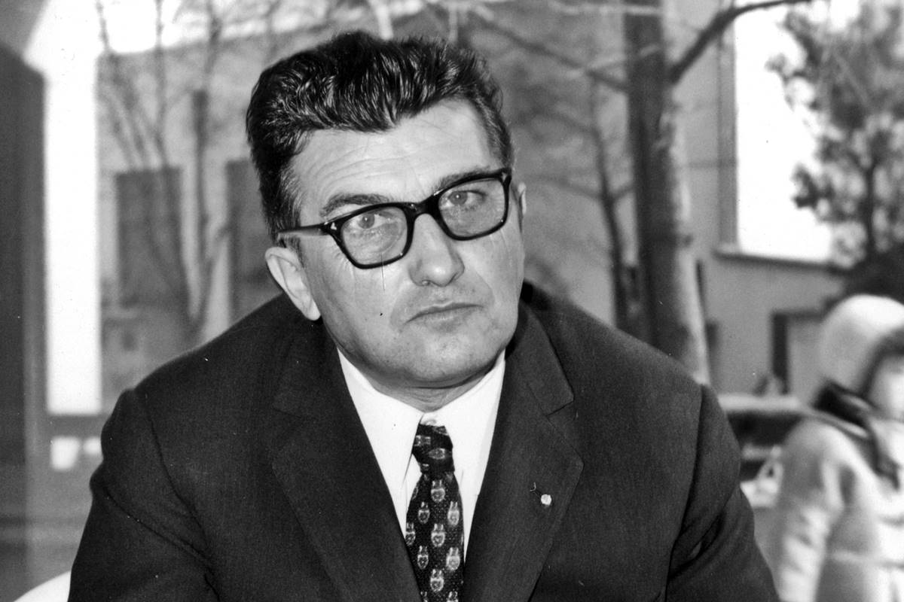

Ferruccio Lamborghini
Ferruccio Lamborghini nació el 28 de abril de 1916 en Cento, Italia. Desde joven mostró un gran interés por la mecánica, lo que lo llevó a estudiar ingeniería industrial. Durante la Segunda Guerra Mundial, trabajó como mecánico para la Fuerza Aérea Italiana, donde adquirió un profundo conocimiento sobre motores. Al finalizar la guerra, Lamborghini fundó una empresa de tractores, que rápidamente se convirtió en un negocio exitoso gracias a su enfoque en la eficiencia y la innovación.
A pesar de su éxito en el sector agrícola, Lamborghini era un apasionado de los automóviles de lujo. Después de adquirir varios autos deportivos, incluyendo un Ferrari, y experimentar problemas mecánicos con ellos, decidió que podía fabricar un mejor vehículo. En 1963, fundó Automobili Lamborghini con el objetivo de crear automóviles de lujo que combinaran potencia, elegancia y fiabilidad. Su primer modelo, el Lamborghini 350 GT, fue un éxito rotundo.
Lamborghini continuó innovando en el diseño de autos deportivos con modelos icónicos como el Miura, el Countach y el Espada. Aunque vendió su empresa en 1974 debido a problemas financieros, su legado perdura. Ferruccio Lamborghini falleció el 20 de febrero de 1993, dejando una marca imborrable en la historia de la automoción.
